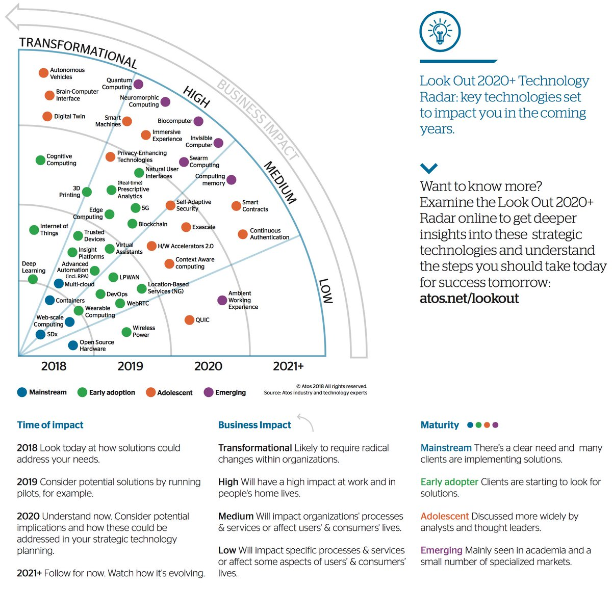
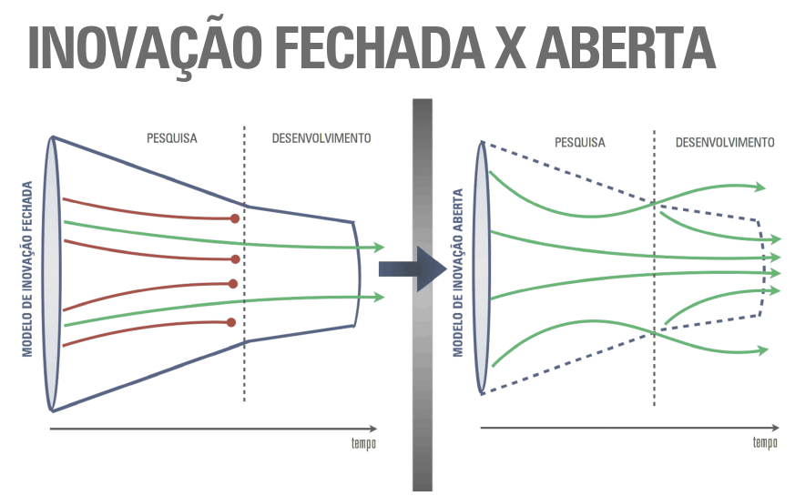

Disciplinas
GESTÃO DE INOVAÇÃO E DESENVOLVIMENTO DE PRODUTOS Concluído
Materiais
Vídeo 1 - Gestão da Inovação e Desenvolvimento de Produtos - Transformação digital, inovação e motivações (UNIVESP) sendProf° ministrante: Alexandre Aparecido Dias (UNIVESP)
Temas da Aula
- Impacto das tecnologias digitais nos negócios
- Inovação e sua tipologia
- Importância da inovação para a competitividade empresarial
- Abordagens para gerenciar o processo de inovação
Inovação

- Quer saber mais?
- Examine o radar Look Out 2020+ on-line para obter insights mais profundos sobre essas tecnologias estratégicas e entender as etapas que você deve seguir hoje para ter sucesso amanhã:
- atos.net/lookout
- 2018 Veja hoje como as soluções podem atender às suas necessidades.
- 2019 Considerar possíveis soluções através da realização de pilotos, por exemplo.
- 2020 Entenda agora. Considere possíveis implicações e como elas poderiam ser abordadas em seu planejamento estratégico de tecnologia.
- 2021+ Siga por enquanto. Observe como está evoluindo.
- Transformacional Provavelmente exigirá mudanças radicais nas organizações.
- Alto Terá um grande impacto no trabalho e na vida doméstica das pessoas.
- Médio Terá impacto nos processos e serviços das organizações ou afetará a vida dos usuários e consumidores.
- Baixo Irá impactar processos e serviços específicos ou afetar alguns aspectos da vida dos usuários e consumidores.
- Mainstream Há uma necessidade clara e muitos clientes estão implementando soluções.
- Os primeiros clientes estão começando a procurar soluções.
- Adolescente Discutido mais amplamente por analistas e líderes de pensamento.
- Emergentes Observados principalmente no meio acadêmico e em um pequeno número de mercados especializados.
Impacto das tecnologias digitais nos negócios
Inteligência Artificial. Todo mundo já ouviu falar, mas você sabe o que é?
- Spotify, NETFLIX
Singularidade tecnológica. Momento em que a IA vai superar a humana
Avanço tecnológico Ameaça x Oportunidade
- novos produtos;
- faturamento;
- imagem;
- liderança;
- qualidade;
- novos mercados;
- custos;
- sustentabilidade;
- competências
Destruição criativa (Schumpeter)
Quanta inovação será necessária para permanecer no mesmo nível (Drucker)
Inovação
INOVAÇÃO
ENVOLVE INVESTIMENTO E A UTILIZAÇÃO DE
NOVOS CONHECIMENTOS OU A COMBINAÇÃO
NOVA DE CONHECIMENTOS EXISTENTES
↓ ↓
TIPOS DE INOVAÇÃO
INOVAÇÃO DE PRODUTO INOVAÇÃO DE MERCADO
INOVAÇÃO DE PROCESSO INOVAÇÃO ORGANIZACIONAL
Radical X Incremental
Processo de inovação
Science Push
Pesquisa Básica 🡺 Pesquisa Aplicada 🡺 Desenvolvimento Experimental 🡺 Engenharia do produto e do processo 🡺 Produção e lançamento
Demand pull
Necessidades Operacionais e de Mercado 🡺 Geração de ideias 🡺 Desenvolvimento da ideia 🡺 Engenharia do produto e do processo 🡺 Produção e lançamento
Abordagens para gerenciar a inovação

Concluindo: precisamos tornar as empresas mais inovadoras
- Estrutura e liderança
- Visão estratégica
- Ambiente organizacional